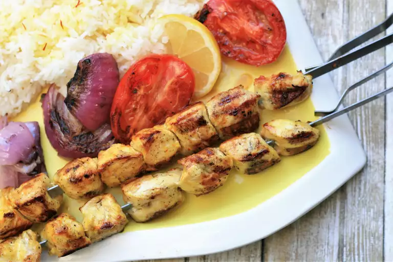

Home
Jujeh Kabob

Description
This is a classic Persian chicken kabob recipe that is very delicious and tasty. Serve with roasted tomatoes, fresh onions, sliced lemons, and rice.
Ingredients
- 1 medium onion, sliced thin
- 1 lime, juiced
- 1 lemon, juiced
- 1 tablespoon salt
- 1 teaspoon ground black pepper
- ⅓ teaspoon crushed saffron
- ¼ cup olive oil
- 3 pounds skinless, boneless chicken breasts, cut into 1-inch cubes
- metal skewers
Steps:
- Combine onion, lime juice, lemon juice, salt, pepper, and saffron in a large glass bowl. Mix in olive oil. Press chicken into the bowl lightly and cover with plastic wrap. Let marinate for 6 hours to overnight, mixing every few hours to make sure chicken is coated.
- Preheat an outdoor grill for medium-high heat and lightly oil the grate.
- Remove chicken from the bowl, shake off excess marinade, and discard marinade left in the bowl. Place chicken onto metal skewers, making sure it's not too tightly packed.
- Cook skewers on the preheated grill until chicken is browned and no longer pink in the center, turning as needed, 10 to 15 minutes total.